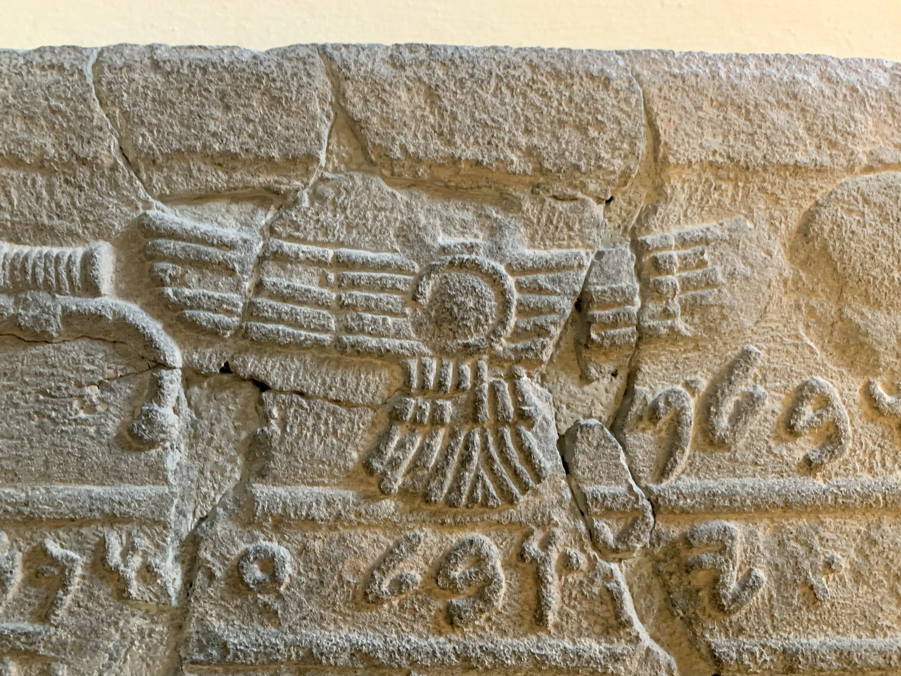

Kilamuwa Stele

- Find Name
- Kilamuwa Stele
- Description
- A 9th-century BC stele of Kilamuwa, king of Sam'al (reigned about 840-810 BC, son of Haya), found in 1902 at the entrance to Building J during the German Oriental Society excavations at Zincirli Höyük (Sam'al), led by Felix von Luschan and Robert Koldewey. Its 16 lines, in Phoenician language written in an Old Aramaic form of the Phoenician alphabet, record Kilamuwa dismissing his predecessors ('he did nothing') and calling on the king of Assyria for help against powerful neighbors after the Danunians overmastered him. It is now in the Vorderasiatisches Museum, Berlin.
- Historical Period
- Iron Age II; 9th century BC
- Evidence Class
- Contextual
- Interpretations
- The stele shows the diplomacy of small Iron Age kings caught between powerful neighbors and Assyria, the same pattern as Ahaz's appeal to Tiglath-Pileser in 2 Kings 16, offered here as a background parallel only, not as a shared event. The relief shows Kilamuwa holding a wilted lotus, a symbol of a dead king, addressing deities.
- Alternative Names
- Kilamuwa Stela; Stele of Kilamuwa
- Related Books
- Scripture Illuminated
- Biblical Significance
- It illustrates how small Levantine kings survived by appealing to Assyria, the same diplomatic pattern seen when Ahaz of Judah appealed to Tiglath-Pileser.
- Artifact Date
- 9th century BC
- Current Location
- Vorderasiatisches Museum, Berlin
- Date Discovered
- 1902
- Discovery Location
- Zincirli Höyük (Sam'al), Turkey
- Timeline Era
- Divided Monarchy
Awaiting Review Not yet checked against scholarly sources. Treat its claims as provisional until this entry is reviewed. About verification
Sources: https://en.wikipedia.org/wiki/Sam%27al
http://www.anatolianarchaeology.net/the-kilamuwa-stele-from-zincirli-hoyuk-reveals-how-a-neo-hittite-king-wrote-his-own-power-into-stone/
http://www.anatolianarchaeology.net/the-kilamuwa-stele-from-zincirli-hoyuk-reveals-how-a-neo-hittite-king-wrote-his-own-power-into-stone/
Last reviewed: not yet reviewed